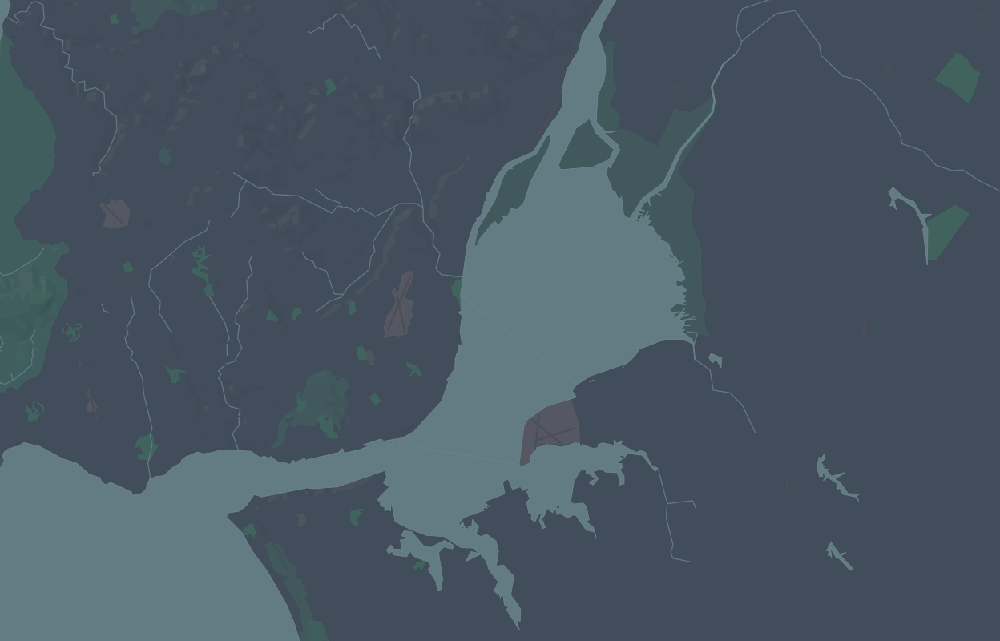

TAAG
Engeland en Portugal, op het eerste gezicht lijken deze landen weinig met elkaar te maken te hebben. Portugal is een warm land, in het zuidenwesten van Europa en Engeland is een kouder, natter land in het noord-westen van Europa. Toch hebben deze landen iets met elkaar gemeen, zowel op fysisch-geografisch gebied als geschiedkundig: twee oude wereldmachten en beide hoofdsteden zijn gevestig aan: estuaria.
Een estuarium is een semi-ingesloten stuk water dat in contact staat met de zee en zowel London als Lissabon is gevestigd aan een estuarium en zijn vernoemd naar hun rivieren: Taag en Theems. Lees hier meer over de geschiedenis van de steden.
Druk op een van de afbeeldingen om naar de estuarium naar keuze te gaan